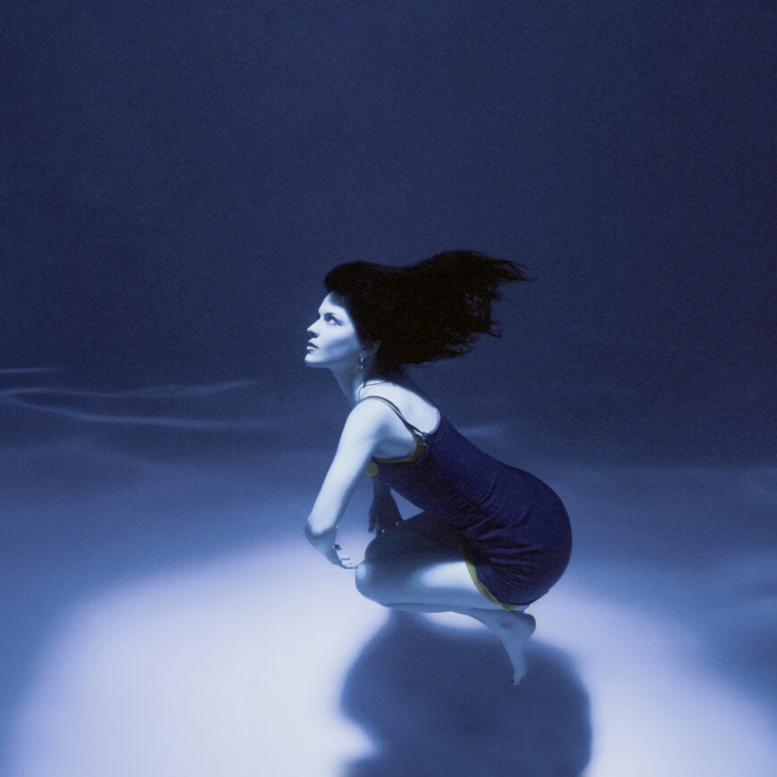

Lejos de Ti
THE MARÍAS
0:002:59
🔉
HTML made by SrYor
🎶🎵
El frío, la nocheEl frío, la noche
Siempre me acuerdo de tiSiempre me acuerdo de ti
🎶
Mile' de cancione'Miles de canciones
Siempre me acuerdo de tiSiempre me acuerdo de ti
¿Por qué estoy lejo' de ti?¿Por qué estoy lejos de ti?
No te olvide' de míNo te olvides de mí
🎶🎵
¿Por qué estoy lejo' de ti?¿Por qué estoy lejos de ti?
No te olvide' de míNo te olvides de mí
🎶
Tus ojos tan tristesTus ojos tan tristes
Siempre me acuerdo de tiSiempre me acuerdo de ti
🎶🎵
Momentos felicesMomentos felices
Siempre me acuerdo de tiSiempre me acuerdo de ti
¿Por qué estoy lejo' de ti?¿Por qué estoy lejos de ti?
No te olvide' de míNo te olvides de mí
¿Por qué estoy lejo' de ti?¿Por qué estoy lejos de ti?
No te olvide' de míNo te olvides de mí
¿Por qué te sigo queriendo?¿Por qué te sigo queriendo?
Ya no puedo másYa no puedo más
Entre tus manos me estoy muriendoEntre tus manos me estoy muriendo
¿Por qué yo sigo cantando "No Me Queda Más"¿Por qué yo sigo cantando "No Me Queda Más"
Entre mis labios, a todo llanto?Entre mis labios, a todo llanto?
Dormía en tu pechoDormía en tu pecho
Siempre me acuerdo de tiSiempre me acuerdo de ti
¿Por qué estás lejos de mí?¿Por qué estás lejos de mí?
Yo no me olvido de tiYo no me olvido de ti
¿Por qué estás lejos de mí?¿Por qué estás lejos de mí?
Nunca me olvido de tiNunca me olvido de ti
🎶🎵